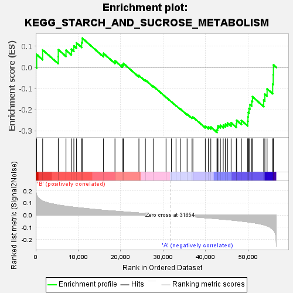
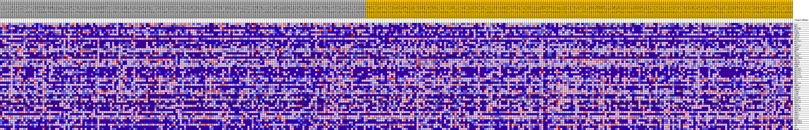
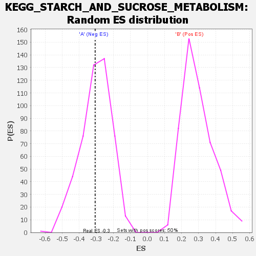

| | | Dataset | my.my.cls#B_versus_A.my.cls#B_versus_A_repos |
| Phenotype | my.cls#B_versus_A_repos |
| Upregulated in class | A |
| GeneSet | KEGG_STARCH_AND_SUCROSE_METABOLISM |
| Enrichment Score (ES) | -0.3071707 |
| Normalized Enrichment Score (NES) | -1.0172044 |
| Nominal p-value | 0.4248497 |
| FDR q-value | 0.66071653 |
| FWER p-Value | 0.998 |
Table: GSEA Results Summary

Fig 1: Enrichment plot: KEGG_STARCH_AND_SUCROSE_METABOLISM
Profile of the Running ES Score & Positions of GeneSet Members on the Rank Ordered List
| SYMBOL | TITLE | RANK IN GENE LIST | RANK METRIC SCORE | RUNNING ES | CORE ENRICHMENT | | 1 | GAA | na | 218 | 0.164 | 0.0610 | No |
| 2 | HK3 | na | 1625 | 0.117 | 0.0825 | No |
| 3 | UGT2B4 | na | 5296 | 0.084 | 0.0508 | No |
| 4 | PYGL | na | 5307 | 0.084 | 0.0838 | No |
| 5 | PYGM | na | 7119 | 0.074 | 0.0812 | No |
| 6 | AMY2A | na | 8391 | 0.069 | 0.0858 | No |
| 7 | AMY1C | na | 8970 | 0.066 | 0.1017 | No |
| 8 | UXS1 | na | 9601 | 0.063 | 0.1157 | No |
| 9 | UGT2B17 | na | 10808 | 0.059 | 0.1176 | No |
| 10 | GCK | na | 10941 | 0.058 | 0.1383 | No |
| 11 | UGT1A3 | na | 15920 | 0.041 | 0.0666 | No |
| 12 | G6PC2 | na | 18648 | 0.033 | 0.0316 | No |
| 13 | UGDH | na | 20356 | 0.029 | 0.0127 | No |
| 14 | HK1 | na | 20630 | 0.028 | 0.0189 | No |
| 15 | UGT1A1 | na | 24286 | 0.018 | -0.0384 | No |
| 16 | TREH | na | 25809 | 0.014 | -0.0596 | No |
| 17 | UGT2B10 | na | 27644 | 0.010 | -0.0882 | No |
| 18 | UGP2 | na | 30671 | 0.002 | -0.1408 | No |
| 19 | AMY2B | na | 31948 | -0.001 | -0.1631 | No |
| 20 | ENPP1 | na | 33020 | -0.003 | -0.1807 | No |
| 21 | GUSB | na | 34001 | -0.006 | -0.1958 | No |
| 22 | UGT1A6 | na | 35626 | -0.010 | -0.2206 | No |
| 23 | UGT2B11 | na | 36785 | -0.013 | -0.2360 | No |
| 24 | UGT1A5 | na | 36994 | -0.013 | -0.2344 | No |
| 25 | UGT2A1 | na | 39912 | -0.021 | -0.2776 | No |
| 26 | UGT1A10 | na | 40632 | -0.023 | -0.2812 | No |
| 27 | GPI | na | 41210 | -0.025 | -0.2816 | No |
| 28 | HK2 | na | 42656 | -0.029 | -0.2957 | Yes |
| 29 | UGT1A8 | na | 42766 | -0.029 | -0.2860 | Yes |
| 30 | PGM1 | na | 42895 | -0.030 | -0.2766 | Yes |
| 31 | UGT1A7 | na | 43462 | -0.031 | -0.2741 | Yes |
| 32 | ENPP3 | na | 44132 | -0.033 | -0.2727 | Yes |
| 33 | PYGB | na | 44635 | -0.035 | -0.2678 | Yes |
| 34 | GANC | na | 45143 | -0.037 | -0.2623 | Yes |
| 35 | GYS2 | na | 45987 | -0.039 | -0.2616 | Yes |
| 36 | UGT2B7 | na | 47209 | -0.044 | -0.2658 | Yes |
| 37 | PGM2L1 | na | 47289 | -0.044 | -0.2497 | Yes |
| 38 | UGT1A9 | na | 48414 | -0.048 | -0.2504 | Yes |
| 39 | GBA3 | na | 49893 | -0.055 | -0.2549 | Yes |
| 40 | AMY1B | na | 49959 | -0.055 | -0.2343 | Yes |
| 41 | UGT1A4 | na | 50016 | -0.055 | -0.2133 | Yes |
| 42 | UGT2A3 | na | 50199 | -0.056 | -0.1943 | Yes |
| 43 | GBE1 | na | 50409 | -0.057 | -0.1754 | Yes |
| 44 | AMY1A | na | 50851 | -0.060 | -0.1596 | Yes |
| 45 | GYS1 | na | 51015 | -0.060 | -0.1385 | Yes |
| 46 | PGM2 | na | 53655 | -0.078 | -0.1541 | Yes |
| 47 | UGT2B15 | na | 53935 | -0.082 | -0.1268 | Yes |
| 48 | UGT2B28 | na | 54455 | -0.088 | -0.1012 | Yes |
| 49 | AGL | na | 55770 | -0.114 | -0.0793 | Yes |
| 50 | SI | na | 55900 | -0.118 | -0.0348 | Yes |
| 51 | MGAM | na | 55948 | -0.120 | 0.0119 | Yes |
Table: GSEA details [plain text format]

Fig 2: KEGG_STARCH_AND_SUCROSE_METABOLISM
Blue-Pink O' Gram in the Space of the Analyzed GeneSet

Fig 3: KEGG_STARCH_AND_SUCROSE_METABOLISM: Random ES distribution
Gene set null distribution of ES for KEGG_STARCH_AND_SUCROSE_METABOLISM